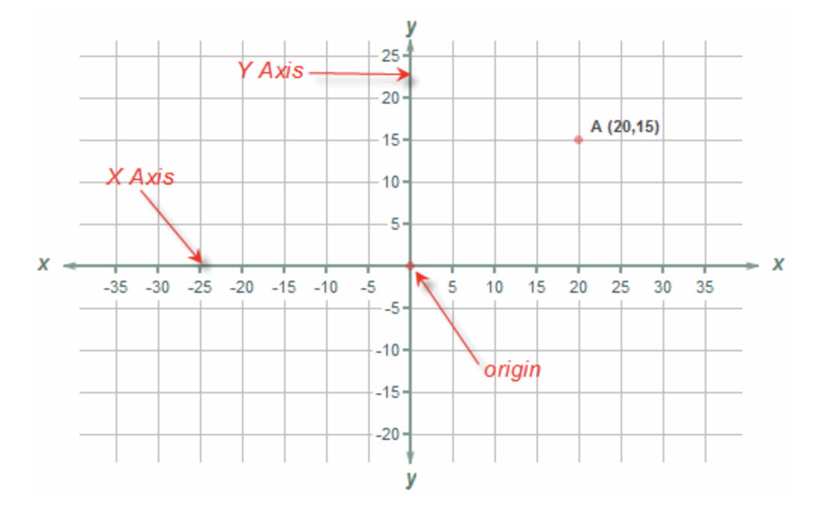
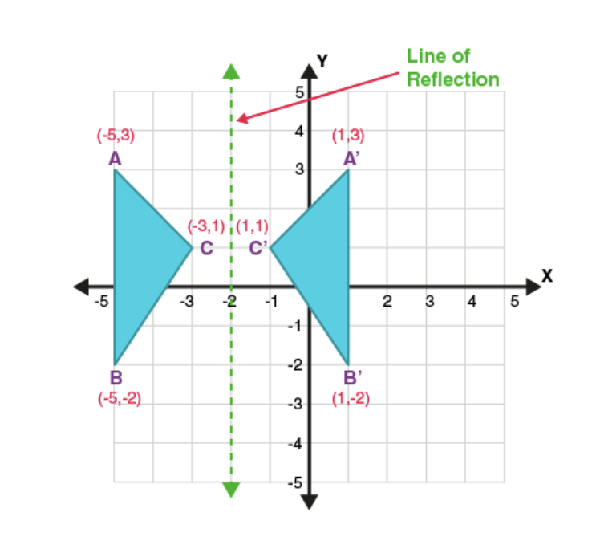
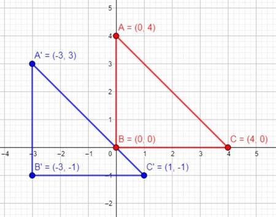

Let’s learn about coordinates, plotting points, reflections, and translations!
Coordinates help us find specific locations on a grid or graph. We can use these to plot points, reflect shapes, or translate shapes to new positions.
What Are Coordinates?
Coordinates are used to describe a specific location on a grid or graph. They are written as (x, y), where:
- x is the horizontal (left or right) position.
- y is the vertical (up or down) position.
Example: The coordinate (3, 2) means:
- Move 3 units to the right on the x-axis.
- Move 2 units up on the y-axis.

How to Plot Coordinates
To plot coordinates, follow these steps:
- Start at the origin (0, 0), where the x-axis and y-axis cross.
- Move horizontally to the x value and vertically to the y value.
- Mark the point where you end up.
Example: To plot (4, 3), move:
- 4 units to the right on the x-axis (x = 4).
- 3 units up on the y-axis (y = 3).
Reflections
A reflection is a flip of a shape over a line, like flipping a shape in a mirror.
Example: If a point is reflected over the y-axis, the x-coordinate changes sign:
Point (3, 2) reflects to (-3, 2).
Reflection Rule: Reflecting over the y-axis changes the sign of the x-coordinate.

Translations
A translation moves a shape without rotating or flipping it. Each point is shifted by a certain amount.
Example: If a point (2, 3) is translated 3 units right and 2 units down, the new point is:
(2 + 3, 3 - 2) = (5, 1).
Translation Rule: To translate a point, add or subtract the same amount to the x and y coordinates.
